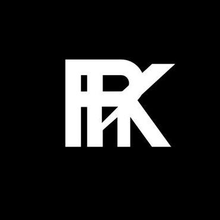

AI · Self-Hosted
LocalNeural
The Ultimate Private AI Interface. Ollama-style local chat with streaming, memory, multimodal vision and RAG workspaces. Nothing OS + Liquid Glass UI.
open repo →
$ whoami
# everything is open-source in here — github.com/rkriad585

“I'm RK Riad Khan, a passionate and driven software developer, ethical hacker, and cybersecurity enthusiast. I thrive on solving complex problems and building innovative solutions.”
Self-taught, open-source-first builder based in Tanor, Rajshahi, Bangladesh. I design and ship fast, native, privacy-focused tools — from terminal utilities to self-hosted AI interfaces — and publish almost everything I make as open source.
Founding the RK Riad 585 brand across GitHub, SourceForge and PyPI, with a signature design language inspired by Nothing OS — liquid glass, dot-matrix and monochrome discipline.
core identity
currently building
GitHub since 2022 · 34+ repos · dozens of CLI tools, web apps & libraries.
view full repository catalog →
Right tool per domain — Python for math & libraries, Go for performance CLIs, Rust for TUI games, TypeScript for the web, and a security-first mindset everywhere.
// + Bash, SQL/SQLite, PHP, jQuery — always learning: Java, R, Rust, ML.
// Flask · Django · React · Tailwind · Socket.IO · SQLite
// Kali Linux · ParrotOS · VPN/privacy tooling
// Right tool per domain — 20 of 34 repos are terminal-first.
A curated slice of 34+ public repositories — every project ships with docs, installers and tests. Everything is open-source in here.
The Ultimate Private AI Interface. Ollama-style local chat with streaming, memory, multimodal vision and RAG workspaces. Nothing OS + Liquid Glass UI.
open repo →Neo Read Write Create — AI-powered CLI that scans a codebase and auto-generates documentation using LLMs from 7 providers.
open repo →Cross-platform Go CLI assistant: remembers commands, explains terminal failures, runs agentic workflows with risk checks, plugs into Gemini/OpenAI/Ollama.
open repo →Natural-language calculator for every platform. Type "20% of 150" — get answers, units, graphs and step-by-step evaluation. ~25 MB binary.
open repo →First-principles Python math engine on PyPI: linear algebra, graph theory, number theory, autodiff, ODE solvers, FFT and 35 built-in constants.
open repo →Stunning ASCII plots straight in your terminal — 28 chart types, zero dependencies. A math engine for the matrix.
open repo →Automatically detect, split and remove silence from MP3 files. 85+ tests, TUI, presets, one-line installers. Top-starred repo.
open repo →cowsay reimagined — 35 ASCII animals, moods, rainbow colors, fortune mode and a REPL. Pure, type-hinted, backwards compatible.
open repo →Captivating terminal typing effects — 18 writers, progress bars, 600+ kaomoji and a mascot system. 198 passing tests.
open repo →Universal media downloader — YouTube, Instagram, X, TikTok and 1000+ sites, with TUI and auto-upload to Telegram/Discord.
open repo →Generate unlimited disposable emails and live-poll the inbox from your terminal. TUI menus, watch mode, saved accounts.
open repo →Self-hosted media streaming server — FFmpeg transcoding, smart resume, binge mode, WebSocket mobile remote, 12 themes.
open repo →Simple, fast and beautiful local file sharing over your LAN — media player, live search and a clean modern interface.
open repo →The Glass Interface Notebook — write and run Python in the browser with a Nothing-UI TUI, xterm terminal and collaborative editing.
open repo →Local file sharing via QR codes — auto-zipping, password protection, link expiration and download tracking in a terminal.
open repo →The Ultimate Network Privacy & VPN Detection Tool — leak tests, process/interface scans, confidence scores and a kill switch.
open repo →Batteries-included auth library: JWT refresh rotation, TOTP MFA, WebAuthn passkeys, RBAC, API keys and HIBP breach checking.
open repo →Command Obfuscation & Alias Execution System — a Flask dashboard stores scripts, a Go CLI executes them via a token-secured REST API.
open repo →Write and run NaturalScript — a human-readable language — on a custom 8-bit Virtual Machine, right in the browser.
open repo →A high-level open-source language — Python/JS-like syntax with Assembly-like performance. Part of the Abscom universe.
open repo →2,492 icons, 30+ CSS animations and 242 Tailwind color classes — zero build tools. Drop-in icon framework for any project.
open repo →Lightweight TypeScript framework for dynamic SVG — 100+ shape helpers, filters, animations and 213 passing tests. Zero dependencies.
open repo →Terminal Gaming Hub — 22+ games (Snake, Tetris, 2048, Minesweeper, Sokoban, Pong…) in one Ratatui dashboard with persistent stats.
open repo →Practice math, track stats and have fun — a modern TUI math game with 3 modes, 5 difficulties and shareable status cards.
open repo →Two projects that define the direction — private, local-first AI and a calculator for every platform, both wrapped in the Nothing OS design language.
The Ultimate Private AI Interface — local, fast, beautiful, multi-provider. A stunning Nothing OS + Liquid Glass UI running entirely on your machine.
A natural-language calculator for every platform. Numi's magic, on Linux, Windows and macOS — ~25 MB, starts in under a second, open source.
Always open to collaborating, sharing ideas or just talking tech. Pick a channel — or drop a line to the red dot below.